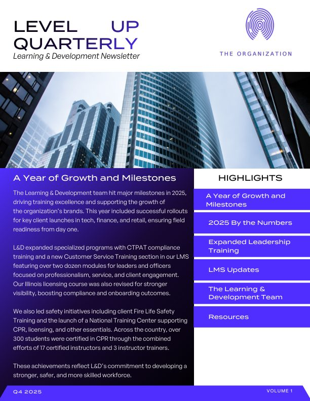
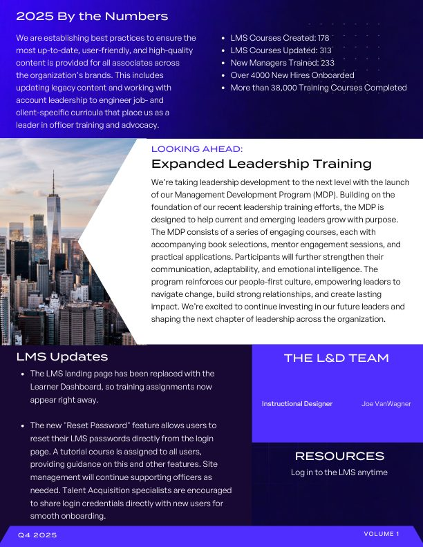

Copywriting & Editing
Composing, editing, revising, and workshopping.
Level Up Quarterly (L&D newsletter)
I wrote and designed this concept for a quarterly Learning & Development newsletter: a year in review, the numbers behind it (178 courses created, 313 updated, 4,000+ new hires onboarded, and 38,000+ courses completed), what's coming next, and quick how-tos for the LMS, all in two scannable pages. Company and client names have been swapped for “the organization.”




Grant writer
I wrote and was awarded a Creative Writing Resource Library Grant for Allen ISD: more than a hundred books, chosen by student vote, to enrich both academic and personal writing. The books served as curriculum extension materials and as the go-to shelf for our after-school Write Club, giving students tips, tricks, and inspiration for writing characters, building worlds, and more.
Quintessa Marketing
At Quintessa, I composed marketing copy emphasizing Search Engine Optimization (SEO) for lawyers seeking personal injury clients. I expedited and improved marketing copy to generate high-quality, relevant content quickly and efficiently.
Edioak
As an Assistant Book Editor (2023), I reviewed and edited manuscripts for grammar, punctuation, and overall content, workshopped drafts with authors, and connected aspiring writers with resources for editing and publishing their work.
White Pine Press
I took several positions over the years as Managing Editor, Co-Editor-in-Chief, Staff Writer, and Distribution Manager. During this time, I exhibited exceptional writing proficiency and versatility by creating engaging and informative content, including articles, features, editorials, and briefs. Work included interviewing students, faculty, and notable community members. During my time there, I was awarded First Place Staff Editorial awards for two consecutive years from the Community College Press Association, for “Revitalizing student life” (2007) and “NMC should plant seed in new agricultural trend: grapes” (2008).
NMC Magazine
I attended the Transmediale Festival for Art and Digital Culture, "Unfinish!", at the Akademie der Künste in Berlin, Germany to research, learn, and generate content while providing important historical context for that year's fine arts magazine. I assisted with magazine layout and design while contributing creative stories for publication as an active editor.
Orange Quarterly
I was a Literary Editor for Orange Quarterly magazine, an online fine arts magazine run collectively by designers and editors nationwide. The e-zine accepted and compiled poetry submissions, short fiction, novel excerpts, nonfiction essays, memoir excerpts, photography, and visual arts. As Editor, I compiled, proofread, and edited copy to be featured in each issue.
Business operations
During college, I revised and edited presentations and other coursework for the Seidman College of Business, aiding clarity and ensuring that students could effectively comprehend and apply the course material.
Social media
I have promoted livestreams on various social media platforms including Twitter and Instagram, by sharing previews, highlights, schedules, and engaging with potential viewers, resulting in a growth of followers and audience engagement.
Published fiction
My short story "Letters" was published in NMC Magazine (2007).
Other content
As a ghost writer, I researched a variety of assigned topics extensively, outlining key points and utilizing concise yet engaging language, and crafted high-quality website content for travel and hobby blogs within short-term (often same-day) deadlines.